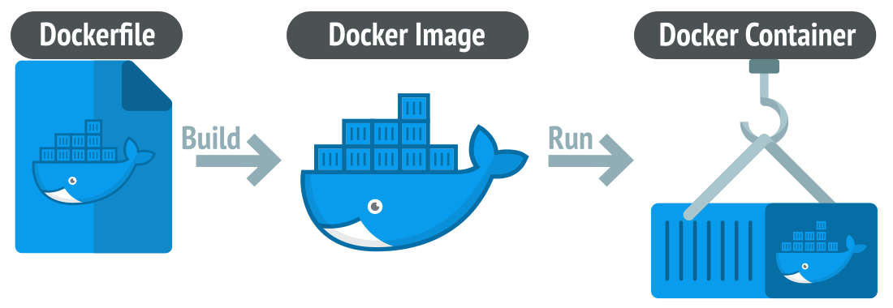
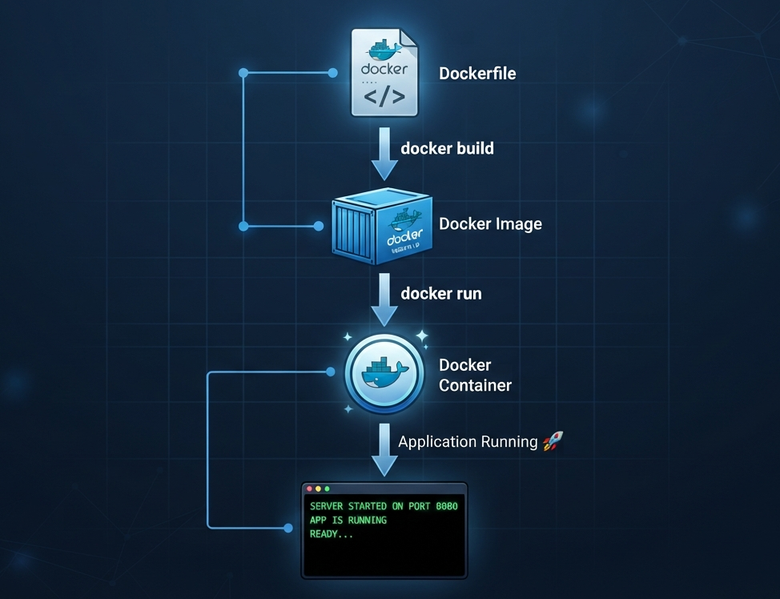

👨💻 Developer
- Works perfectly
- Node 22
- MongoDB Latest
- npm install done
➡
🖥 Production Server
- Different Node Version
- Missing Packages
- Wrong Environment
- Application Crashes ❌
Forget boring notes. Learn DevOps through stories, diagrams, practical examples and real industry workflow.
Start Learning →Imagine you built an amazing MERN project on your laptop. Everything works perfectly. You send it to your company. Suddenly...
Developer and server have different environments.
Deployment takes hours and is mostly manual.
Developers and Operations blame each other.
Users experience downtime after every release.
DevOps is not a tool. DevOps is a culture where Developers and Operations teams work together to build, test and deploy software faster.
Writes features and fixes bugs.
Tests every release.
Automates build, testing and deployment.
Gets updates quickly with fewer bugs.

Every software follows almost the same journey. Click any stage to see what actually happens there.
Identify the problem. Discuss features. Understand users. Estimate timeline.
Before DevOps, Developers and Operations worked like two separate teams. Both had different goals, which caused delays and deployment failures.
Continuous Collaboration
Whenever you push code to GitHub, a series of automated steps can happen. This process is called a CI/CD Pipeline.
Developers were tired of hearing one sentence...
Different developers had different
Instead of carrying individual game files, you carry the entire installed game folder. It runs exactly the same everywhere.
Rather than sending items separately, Docker packs everything inside one sealed box. Nothing gets lost.
A coffee recipe gives instructions. A prepared coffee is ready to drink. Docker Image = Recipe Container = Coffee
Both isolate applications, but Docker Containers are lightweight because they share the host OS kernel.
Docker Hub
│
Pull Image
│
▼
Docker Engine
┌──────┴──────┐
│ │
Container A Container B
Node App MongoDB
Accepts docker commands.
Creates and manages containers.
Cloud repository for Docker Images.

One of the most confusing Docker concepts is understanding the difference between an Image and a Container. Don't memorize the definitions. Understand the journey.
A Docker Image is like a snapshot of your application. It contains everything your application needs to run.
Recipe
│
▼
Bake Pizza
│
▼
Cooked Pizza
│
▼
Pizza On Your Table
Dockerfile
Docker Image
Docker Container
This is one of the most important interview concepts.
Docker Image
│
├────────────► Container 1
│
├────────────► Container 2
│
├────────────► Container 3
│
└────────────► Container 4
| Docker Image | Docker Container |
|---|---|
| Blueprint | Running Application |
| Read Only | Read & Write |
| Built using Dockerfile | Created from Image |
| docker build | docker run / docker compose up |
| docker images | docker ps |
| One Image → Many Containers | Runs One Instance |

A Dockerfile is simply a text file that contains instructions to build a Docker Image. Instead of manually installing Node.js, dependencies, and copying files every time, Docker automates everything.
Selects the base image.
Example: Node.js 22
Creates the working folder inside the container.
Copies project files from your laptop into the container.
Executes commands while building the image.
Tells Docker which port your application uses.
Starts your application when the container runs.
Dockerfile
│
▼
docker build
│
▼
Docker Image
│
docker run
│
▼
Running Container
Imagine your MERN application has
Running every container one by one becomes difficult. Docker Compose solves this problem.
docker-compose.yml
│
▼
docker compose up
│
▼
Frontend Container
Backend Container
MongoDB Container
│
▼
Everything Starts Together 🚀
docker compose up docker compose down docker compose ps docker compose logs
Companies usually separate Frontend Backend Database Redis Nginx into different containers and start them together using Docker Compose.
Imagine you stored all your college assignments inside your laptop. Now suddenly your laptop crashes. 😢 Everything is gone. Containers behave exactly the same. When a container is deleted, its data is also deleted. Docker Volumes solve this problem.
Container ┌────────────────────┐ │ MongoDB │ │ │ │ Student Data │ │ │ └────────────────────┘ docker rm ❌ Everything Lost
Docker Volume
┌───────────────┐
│ Student Data │
└──────┬────────┘
│
┌────────▼────────┐
│ MongoDB │
│ Container │
└─────────────────┘
docker rm
Container Deleted
✅ Data Still Safe
Money is not kept in your pocket forever. You keep it safely inside a locker. Docker Volume works the same way.
Even if your phone breaks, your photos are safe because they're stored elsewhere. Docker Volume follows the same idea.
MongoDB MySQL PostgreSQL Redis All databases should use Volumes.
Containers cannot magically communicate. Docker Network allows containers to talk to each other securely.
Frontend
❌
Backend
❌
MongoDB
No Communication
Docker Network
┌──────────────┐
Frontend ⇄ Backend ⇄ MongoDB
└──────────────┘
All Containers Can Communicate
Default Network. Containers on the same machine communicate.
Container shares Host Machine Network. Very Fast.
Used in Docker Swarm. Containers communicate across multiple servers.
Internet
│
React Container
│
Docker Bridge Network
┌─────────┼─────────┐
│ │ │
Backend Redis MongoDB
Container Container Container
When data should survive. Examples: MongoDB MySQL Redis
Whenever containers need to communicate. Frontend ↔ Backend Backend ↔ Database Backend ↔ Redis
Volume stores Data. Network connects Containers. Students often confuse these two.